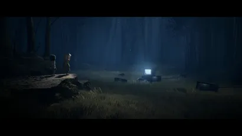

КЛЮЧЕВЫЕ ОСОБЕННОСТИ
Отправляйтесь в жуткое и пугающее приключение
Множество новых чудовищ уже готовятся взять след и ворваться в ваш
сон. Перехитрите садистку Учительницу,
останьтесь в
живых после встречи с кровожадным Охотником и унесите ноги от сонма других – еще более жутких –
персонажей, которые
встретятся Моно и Шестой на пути к Маяку.
Откройте удивительный мир, искаженный воздействием Маяка
Спаситесь из этого мира, гниющего изнутри. В поисках источника зла, который распространяется через телевизионные экраны по всему миру, вы побываете и в жутких лесах, и в зловещих школах, и во многих других местах, от которых кровь стынет в жилах.
Пробудите своего внутреннего ребенка, чтобы спасти Шестую от темноты

Шестая начала исчезать, и ее единственная надежда – помочь Моно
добраться до Маяка через все опасности
этого ужасающего
мира ночных кошмаров. Сможете ли вы проявить мужество, дать отпор мучителям и вместе с Шестой узнать
зловещую тайну
Маяка?
ИЗДАНИЕ 1-ГО ДНЯ
Издание 1-го дня Little Nightmares II включает следующее:
– Доступ в секретную комнату Номов
Следуйте за Номами, чтобы найти эту особую внутриигровую головоломку и открыть шляпу Номов в качестве
награды за
прохождение.
– Цифровой мини-саундтрек
Насладитесь подборкой из 5 композиций Little Nightmares, сочиненных
Тобиасом Лиля
ТВ-издание Little Nightmares II включает следующие предметы
– Коллекционный телевизионный ящик
– Кейс со стандартной игрой (диск
Blu-ray для PS4 и Xbox One, картридж для
Nintendo Switch, цифровой код Steam для ПК.
– Диорама «Побег»
(очень детальная статуэтка Моно и Шестой,
путешествующих по телевизорам).
– Оригинальный саундтрек Little Nightmares II
Полный саундтрек
на CD и в цифровой версии для загрузки, сочиненный
Тобиасом Лиля из Tarsier Studios.
– Книга иллюстраций Little Nightmares II
Погрузитесь в историю создания Little Nightmares II с этим
56-страничным альбомом, полным эскизов, художественных
работ и дизайнов художественной команды Tarsier Studios.
– Коллекционный стилбук
– Эксклюзивные стикеры Little Nightmares II